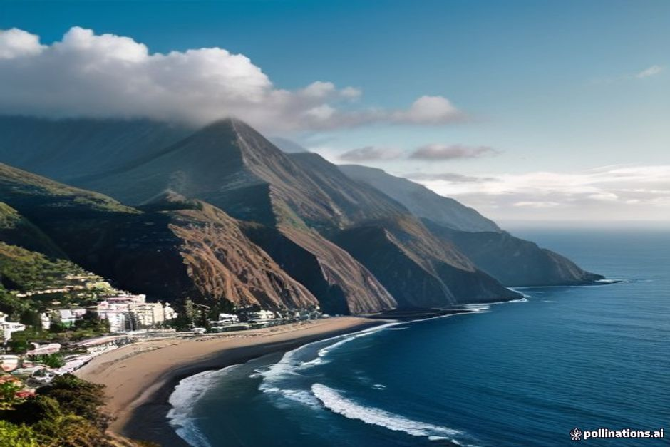
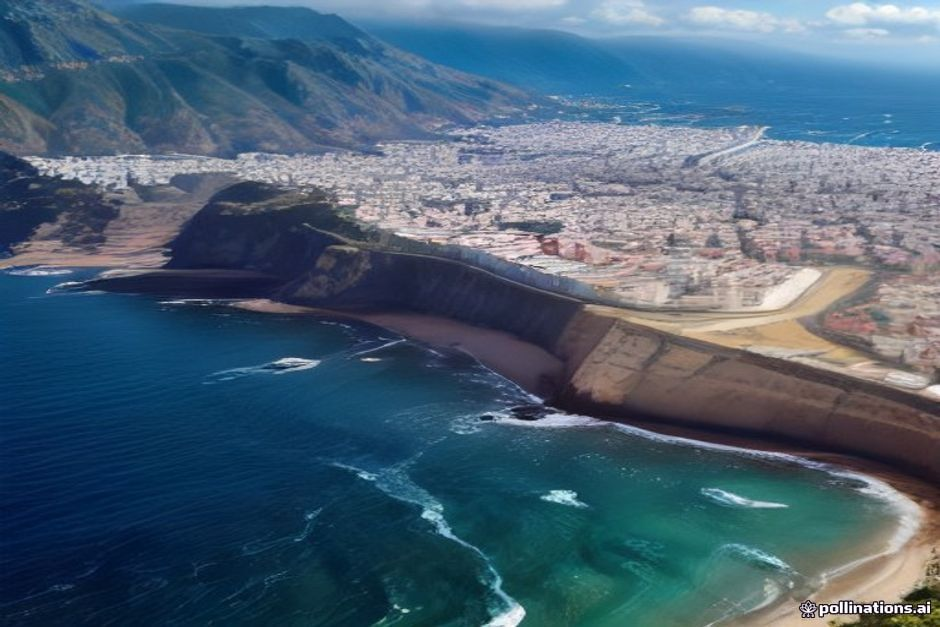

Si está pensando en Madeira en verano, probablemente se pregunte tres cosas: si hará calor de verdad, cómo estará el agua y si conviene más julio, agosto o septiembre. Aquí tiene las respuestas, con cifras de Funchal y con un criterio claro para decidir cuándo viajar a Madeira. Y si además quiere ver la isla desde el mar, le contamos qué cambia según el mes en un paseo en barco por Madeira.
El tiempo en Madeira en verano: lo esencial en un minuto
Madeira en verano es cálida, seca y soportable. No tiene el calor de la meseta ni el del valle del Guadalquivir. Estas son las cifras que manejamos en Funchal, la costa sur, que es donde se concentra la mayoría de los viajeros:
- Junio: máximas de unos 24 °C y agua a unos 21 °C.
- Julio: máximas de unos 26 °C y agua entre 22 y 23 °C.
- Agosto: máximas cercanas a 27 °C y agua entre 23 y 24 °C.
- Septiembre: el mar alcanza su máximo del año, en torno a 24 °C.
Las noches rara vez bajan de 18 o 19 °C. Son medias de temporada, no una promesa para un día concreto: conviene mirar la previsión un par de días antes de salir.
Madeira en julio y en agosto: ¿hace calor?
Lo que más sorprende a quien viene de la península es que el termómetro apenas se mueve. Madeira está en pleno Atlántico, y por eso se libra de las olas de calor que en julio y agosto castigan Madrid, Sevilla o el Algarve. Veintisiete grados con brisa marina no se parecen en nada a veintisiete grados tierra adentro.
En la práctica, bañador, sandalias y ropa ligera sirven para casi todos los días. Lo que sí hace falta es protección solar, porque el sol atlántico pega más de lo que parece cuando sopla la brisa.

Temperatura del agua en Madeira: mes a mes
Este es el dato que más se busca y el que más desconcierta. El Atlántico en torno a Madeira tarda en calentarse: en junio ronda los 21 °C, en julio sube a unos 22 o 23 °C y en agosto llega a 23 o 24 °C. No es el agua de un Mediterráneo en agosto, pero es un baño agradable, sobre todo si se entra con calma y sin prisa.
El máximo anual llega en septiembre, porque el océano sigue acumulando calor cuando el aire ya empieza a enfriarse. Por eso septiembre es una elección muy buena para quien prioriza el agua.
Madeira en septiembre: ¿mejor que agosto?
Depende de lo que busque. Septiembre ofrece el mar más cálido del año y, según nuestra experiencia, bastante más disponibilidad que agosto para reservar barco, mesa y alojamiento. Agosto, en cambio, tiene las mayores aglomeraciones y la agenda de fiestas más cargada.
Si le da igual un grado de agua y le importa más la tranquilidad, septiembre gana. Si sus vacaciones caen sí o sí en agosto, no hay problema: solo hay que reservar antes.
¿Llueve en Madeira en verano?
Muy poco. Junio, julio y agosto son los meses más secos del año en la costa sur, y Funchal pasa largos tramos sin lluvia apreciable. La costa norte (Santana, São Vicente, Porto Moniz) acumula más nubes por el reparto de microclimas de la isla, pero incluso allí el verano es la época más seca.
Es la única temporada en la que mirar la previsión tiene más que ver con la intensidad del sol que con el riesgo de perder el día. Aun así, un consejo: la mañana puede amanecer brumosa en Funchal y despejarse por completo en el mar.
Cuándo es mejor viajar a Madeira según lo que busque
No hay un único mes ideal. Esta es la forma más sencilla de decidir:
- Quiere bañarse con el mar en calma y días largos: de junio a septiembre. El verano trae el oleaje atlántico más tranquilo del año.
- Quiere el agua más cálida: septiembre.
- Quiere fiestas y ambiente: agosto, con más gente y precios más altos.
- Quiere menos gente con un calor parecido: finales de primavera o septiembre.
El verano es también la temporada más concurrida y cara de la isla. Vuelos, hoteles y paseos en barco se agotan con semanas de antelación, y más aún las tardes de julio y agosto.
Qué hacer en Madeira en verano: fiestas y planes
El verano es la temporada de fiestas. Junio abre con el Festival do Atlântico, cuatro sábados de fuegos artificiales sobre la bahía de Funchal, y se despide con las hogueras en las playas de guijarros la noche de San Juan, el 23 de junio. Julio trae música al aire libre en el Parque de Santa Catarina y pequeñas citas muy madeirenses, como la fiesta de la lapa en Paul do Mar.
Agosto es el mes más intenso: el 15, día de la Asunción, todas las parroquias se llenan de procesiones y fuegos artificiales, y hacia la última semana ya está en marcha en Câmara de Lobos la Fiesta del Vino de Madeira, ligada a la vendimia. Nada de esto exige planificación para disfrutarlo desde la costa.
Qué llevar en la maleta
La protección solar va primero: crema respetuosa con los arrecifes, gorra y una prenda ligera de manga larga para el barco. Lleve bañador y calzado de agua para las calas de roca volcánica, y una prenda de abrigo para las noches, porque Funchal refresca al anochecer y en la montaña (Pico do Arieiro, Pico Ruivo) puede hacer frío incluso en agosto. Unas zapatillas cómodas bastan para las levadas, que en verano se mantienen secas.
Detalles prácticos para viajar desde España
- Al ser un destino portugués y de la Unión Europea, los viajeros con DNI español pueden viajar sin pasaporte, y se paga en euros.
- Madeira va una hora por detrás de la España peninsular. Conviene tenerlo en cuenta al fijar la hora de una salida.
- Reserve vuelo, alojamiento y actividades con antelación si viaja en julio o agosto.
En la sección de información práctica encontrará cómo llegar al punto de encuentro y qué esperar a bordo.
Madeira desde el mar en verano: qué ofrece Chifbay
Con un mar tranquilo, el barco es una buena manera de ver la costa sur. Chifbay es una empresa privada de Funchal: el barco entero es para un solo grupo, hasta 5 personas, con dos patrones titulados de Madeira, en un Karnic R8S de 2026. El punto de encuentro es la Marina do Funchal, pantalán C.
- Excursión de día: sale a las 10:00 o a las 14:00. Son 2 h 30 hasta Ribeira Brava por 500 EUR, o 3 h hasta Ponta do Sol por 600 EUR. Incluye Câmara de Lobos, Cabo Girão, un baño y paddle surf en Fajã dos Padres.
- Atardecer en barco: sale 1 h 15 antes de la puesta de sol, todo el año. Son 2 h hasta Cabo Girão por 400 EUR, o 2 h 30 hasta Ribeira Brava por 500 EUR. No incluye parada para bañarse.
Los precios son por el barco entero, nunca por persona. Todas las salidas incluyen comida y bebidas a bordo, un vídeo en 360° con Insta360, imágenes con dron (si el tiempo lo permite) y fotos con cámara de verdad. La cancelación es gratuita hasta 24 horas antes de la salida. Puede ver todas las opciones en experiencias.

Cuándo reservar
En julio y agosto lo razonable es reservar el barco y la mesa del restaurante antes de aterrizar, no después. Las tardes de verano son las primeras en llenarse. En junio y septiembre suele haber más margen.
El verano no hace mejor a Madeira. Solo hace que el agua sea difícil de rechazar.
Sea cual sea la semana que elija, revise la previsión uno o dos días antes en lugar de fiarse de la media del mes. Los delfines, las ballenas o una luz especial no se pueden prometer: cuando aparecen, son un regalo.